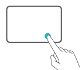

键盘上的触摸板拥有类似鼠标的功能，让您更方便的操控计算机。 并非所有手势都可用于所有应用，请以实际为准。
并非所有手势都可用于所有应用，请以实际为准。
常见触摸板手势
单指点击：相当于单击鼠标左键 |
|
单指双击：相当于双击鼠标左键 |
|
单指移动：移动桌面上的光标 |
|
左键单击：相当于单击鼠标左键 |
|
 |
右键单击：相当于单击鼠标右键 |
双指点击：相当于单击鼠标右键 |
|
双指上下滑动：滚动浏览屏幕或文档 |
|
双指张开或闭合：浏览图片、网页等时，可以放大或缩小图片、网页等 |
|
三指点击：使用搜索 |
|
 |
三指向上滑动：多任务视图 |
三指向下滑动：显示桌面 |
|
三指左右滑动：切换应用 |
|
四指点击：快速打开操作中心 |
更改触摸板设置
您也可以根据自己的使用习惯更改触摸板设置，让指尖操作更得心应手。
- 点击
 >
>  打开设置界面。
打开设置界面。 - 在设置界面中，点击
 ，再点击，您可以：
，再点击，您可以：
- 开启或关闭触摸板。
- 连接鼠标时开启或关闭触摸板。
- 更改触摸滚动方向。
- 设置手指动作在触摸板上的功能等。
设置压力触控板功能
计算机出厂默认开启压力触控板功能，您可以根据个人喜好调节触摸板按压灵敏度、振动强度。
点击 打开开始菜单，点击打开压力触控板应用，可对触摸板进行设置。
打开开始菜单，点击打开压力触控板应用，可对触摸板进行设置。